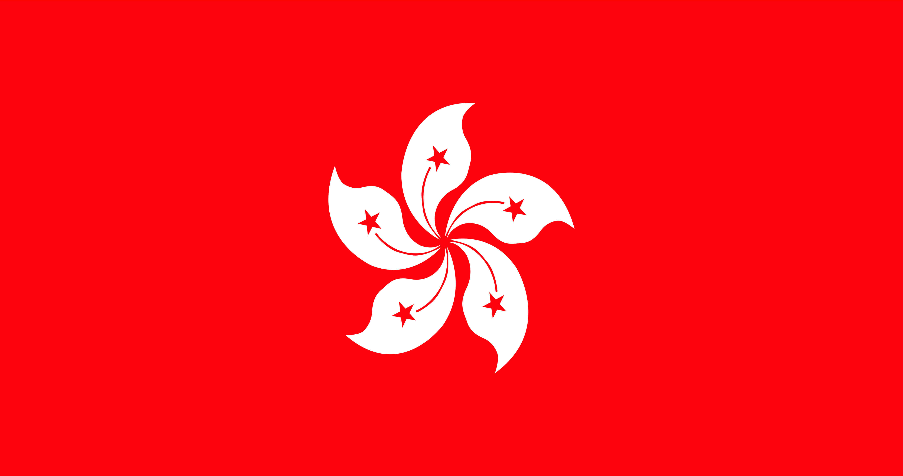
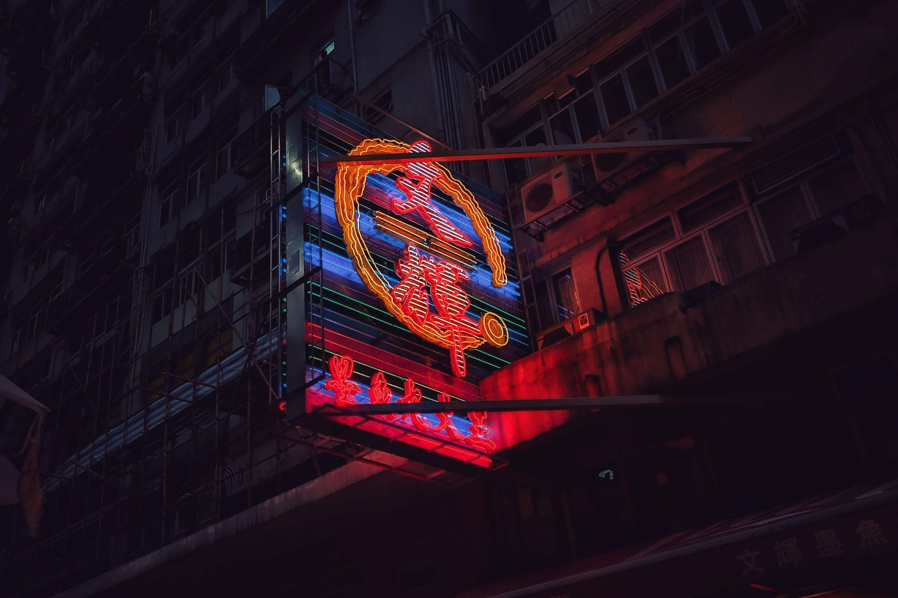
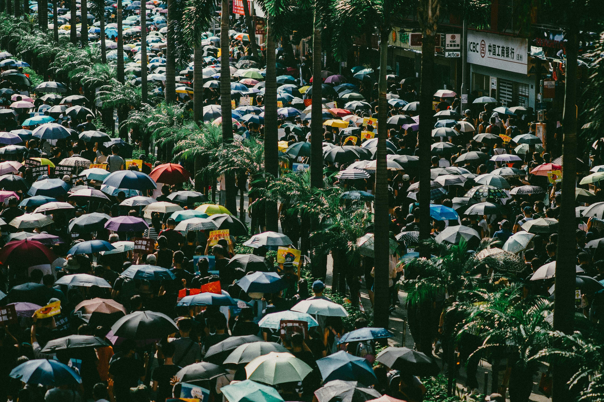
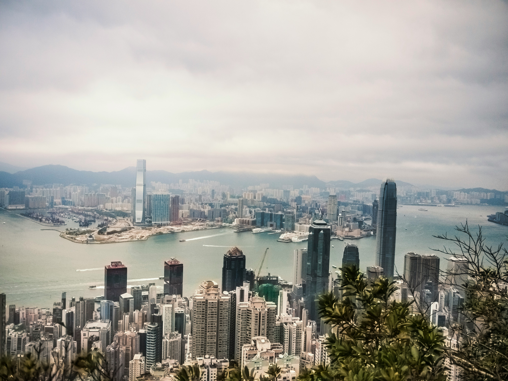
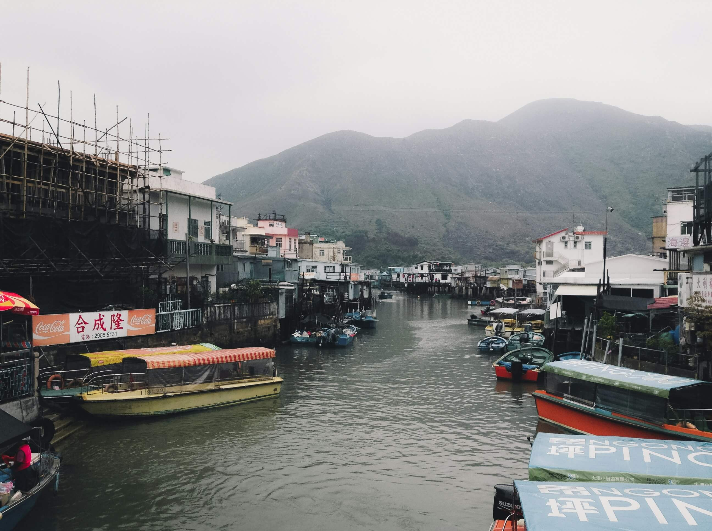

Introduction

Hong Kong is a Special Administrative Region (SAR) of the People's Republic of China. It is located on the southern coast of China and consists of a peninsula and several islands. Hong Kong was a British colony from 1842 until 1997 when it was handed back to China under the principle of "one country, two systems." This arrangement was meant to guarantee a high degree of autonomy for Hong Kong, including its legal and economic systems, for 50 years after the handover. The "one country, two systems" framework was intended to allow Hong Kong to maintain a separate legal system, retain its capitalist economic system, and enjoy a high degree of autonomy, with the ultimate aim of preserving its way of life. However, in recent years, there have been concerns about the erosion of Hong Kong's autonomy and freedoms, leading to protests and tensions between the Hong Kong people and the central Chinese government. Hong Kong is known for its vibrant economy, bustling city life, and as a major financial and business hub in Asia. It has a unique blend of Eastern and Western cultures, reflecting its historical background as a British colony. The city is renowned for its skyline, deep natural harbor, and cultural attractions.
Economy
Hong Kong boasts a highly developed and market-oriented economy, renowned for its role as an international financial and business hub. With a strategic location and a deep natural harbor, the city serves as a pivotal center for global trade and logistics, acting as a gateway to Mainland China and the broader Asia-Pacific region. One of the key factors contributing to its economic attractiveness is its low-tax regime, featuring minimal government intervention and an absence of value-added tax. The Hong Kong Dollar, pegged to the U.S. dollar, ensures currency stability in its financial system. Despite challenges, such as an expensive real estate market driven by limited land supply, Hong Kong continues to draw tourists with its unique blend of Eastern and Western cultures, modern infrastructure, and vibrant culinary and shopping scenes. The city's economic landscape reflects a dynamic fusion of global influences, making it a focal point for international business and commerce.
Culture

Hong Kong's culture is a rich tapestry woven from its historical roots, a blend of traditional Chinese influences and a distinct colonial legacy. The city's unique cultural identity is shaped by its role as a former British colony and its subsequent return to Chinese sovereignty in 1997 under the "one country, two systems" framework. This duality is evident in various aspects of Hong Kong's culture. Cuisine is a vibrant expression of Hong Kong's identity, featuring a diverse array of flavors from both Cantonese and international cuisines. The city is renowned for its dim sum, street food, and fusion dishes that reflect the fusion of East and West. Language plays a pivotal role, with both Cantonese and English widely spoken. The trilingual nature of public signage reflects the cultural diversity and historical influences that have shaped the linguistic landscape. Traditional Chinese festivals, such as Chinese New Year, Mid-Autumn Festival, and Dragon Boat Festival, are celebrated with enthusiasm. These events showcase traditional customs, including dragon and lion dances, fireworks, and the sharing of festive meals. The arts scene is vibrant, encompassing traditional Chinese opera, contemporary art galleries, and a burgeoning film industry. Hong Kong's film industry, in particular, has gained international recognition for its unique style and contributions to martial arts cinema. The cityscape itself is a testament to its cultural fusion, featuring a juxtaposition of modern skyscrapers against historical landmarks. Temples, such as Wong Tai Sin and Man Mo, stand alongside colonial-era architecture, like the iconic Star Ferry and the Peak Tram. Hong Kong's culture is also marked by a strong work ethic and a fast-paced lifestyle. The city's residents are known for their resilience and adaptability, traits that have been instrumental in the face of historical challenges and periods of rapid change. Despite its cosmopolitan atmosphere, Hong Kong maintains a deep connection to its cultural roots, creating a dynamic and multifaceted societal fabric that continues to evolve.
Politics

Hong Kong's environment is a dynamic interplay between its bustling urban landscape and pockets of natural beauty. Characterized by high population density and towering skyscrapers, the city faces challenges related to air pollution, largely stemming from industrial activities and vehicular emissions. Despite this, Hong Kong is home to areas of remarkable natural landscapes, including country parks, hiking trails, and scenic coastlines, providing residents and visitors with opportunities for outdoor recreation. Conservation efforts are evident in initiatives like the Hong Kong Global Geopark and protected marine areas, emphasizing the city's commitment to preserving biodiversity and natural heritage. Waste management remains a significant concern, prompting the implementation of recycling programs to address the substantial amount of waste generated in this densely populated metropolis. Additionally, Hong Kong grapples with water resource management, relying on reservoirs and imported water, while simultaneously facing the challenges posed by extreme weather events like typhoons. Balancing urban development with environmental sustainability is an ongoing endeavor, with the city actively working towards a harmonious coexistence of its vibrant urban lifestyle and the preservation of its ecological treasures.
Environment

Hong Kong's environment is a dynamic interplay between its bustling urban landscape and pockets of natural beauty. Characterized by high population density and towering skyscrapers, the city faces challenges related to air pollution, largely stemming from industrial activities and vehicular emissions. Despite this, Hong Kong is home to areas of remarkable natural landscapes, including country parks, hiking trails, and scenic coastlines, providing residents and visitors with opportunities for outdoor recreation. Conservation efforts are evident in initiatives like the Hong Kong Global Geopark and protected marine areas, emphasizing the city's commitment to preserving biodiversity and natural heritage. Waste management remains a significant concern, prompting the implementation of recycling programs to address the substantial amount of waste generated in this densely populated metropolis. Additionally, Hong Kong grapples with water resource management, relying on reservoirs and imported water, while simultaneously facing the challenges posed by extreme weather events like typhoons. Balancing urban development with environmental sustainability is an ongoing endeavor, with the city actively working towards a harmonious coexistence of its vibrant urban lifestyle and the preservation of its ecological treasures.
History

Hong Kong's history is a complex tapestry woven from centuries of Chinese tradition, British colonial rule, and the city's evolution into a global economic powerhouse. Prior to British involvement, the region was inhabited by indigenous peoples. In the 19th century, during the First Opium War (1839-1842), Britain gained control of Hong Kong Island through the Treaty of Nanking. Kowloon Peninsula and the New Territories were later leased to Britain in 1860 and 1898, respectively, further expanding British influence. Under British colonial administration, Hong Kong flourished as a trading port. The city's population grew, and it became a melting pot of Eastern and Western cultures. During World War II, Hong Kong fell under Japanese occupation from 1941 to 1945, experiencing significant hardships. After the war, Hong Kong resumed its development, emerging as an economic hub. The post-war period also saw waves of migration, including refugees escaping the Chinese Civil War. The influx of people contributed to population growth and cultural diversity. In 1997, under the principle of "one country, two systems," Hong Kong was handed back to China, marking the end of British colonial rule. This arrangement aimed to maintain the city's autonomy and distinct legal and economic systems for 50 years after the handover. Since then, Hong Kong has grappled with political and social challenges, with concerns about the preservation of its freedoms and autonomy. In recent years, Hong Kong has been a focal point for protests and demonstrations, reflecting the complex relationship between its residents and the central Chinese government. The city continues to navigate its identity, balancing its historical ties with the realities of being a Special Administrative Region within the People's Republic of China. The historical journey of Hong Kong showcases a unique blend of tradition and modernity, shaped by its diverse influences and the resilience of its people in the face of significant changes.